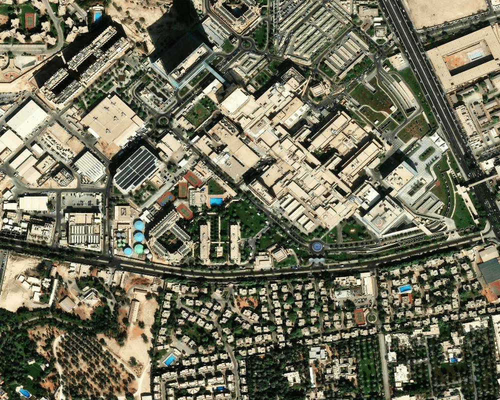
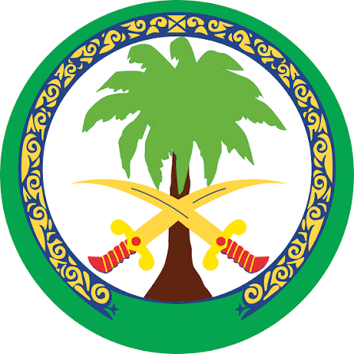

<!DOCTYPE html>
<html lang="en">
<head>
<meta charset="UTF-8" />
<meta name="viewport" content="width=device-width, initial-scale=1.0" />
<title>Hospital Drone System — KFSHRC Flight Operations</title>
<link rel="icon" href="data:image/svg+xml,%3Csvg xmlns='http://www.w3.org/2000/svg' viewBox='0 0 100 100'%3E%3Ctext y='.9em' font-size='90'%3E%F0%9F%9A%81%3C/text%3E%3C/svg%3E" />
<link rel="preconnect" href="https://fonts.googleapis.com">
<link rel="preconnect" href="https://fonts.gstatic.com" crossorigin>
<link href="https://fonts.googleapis.com/css2?family=IBM+Plex+Sans:wght@400;500;600;700&family=IBM+Plex+Mono:wght@400;500;600;700&display=swap" rel="stylesheet">

<style>
  :root {
    --void: #0a1730;
    --panel: #0f2247;
    --panel-raised: #14315f;
    --panel-inset: #0b1c3c;
    --line: #274b7d;
    --line-soft: #1d3a66;
    --text: #eef4fd;
    --text-dim: #9db4d9;
    --text-faint: #5d78a8;

    --teal: #34d6c4;
    --teal-soft: rgba(52, 214, 196, 0.14);
    --teal-glow: rgba(52, 214, 196, 0.35);

    --orange: #ff8a3d;
    --orange-soft: rgba(255, 138, 61, 0.14);

    --green: #3ddc84;
    --amber: #ffb648;
    --red: #ff5a5a;
    --purple: #b98bff;

    --radius: 10px;
    --font-ui: 'IBM Plex Sans', ui-sans-serif, system-ui, sans-serif;
    --font-mono: 'IBM Plex Mono', ui-monospace, 'SF Mono', monospace;
  }

  * { box-sizing: border-box; }

  html, body {
    background: var(--void);
    color: var(--text);
    font-family: var(--font-ui);
    margin: 0;
    padding: 0;
    -webkit-font-smoothing: antialiased;
  }

  body {
    background-image:
      radial-gradient(circle at 15% 0%, rgba(52,214,196,0.05), transparent 40%),
      radial-gradient(circle at 85% 100%, rgba(255,138,61,0.04), transparent 45%);
    min-height: 100vh;
  }

  #root { padding: 18px 22px 28px; max-width: 1500px; margin: 0 auto; }

  ::-webkit-scrollbar { width: 8px; height: 8px; }
  ::-webkit-scrollbar-thumb { background: var(--line); border-radius: 8px; }

  .mono { font-family: var(--font-mono); }
  .tabular { font-variant-numeric: tabular-nums; }

  /* ---------- Top bar ---------- */
  .topbar {
    display: grid;
    grid-template-columns: auto 1fr auto;
    align-items: center;
    gap: 16px;
    padding: 14px 20px;
    background: linear-gradient(180deg, var(--panel-raised), var(--panel));
    border: 1px solid var(--line);
    border-radius: var(--radius);
    margin-bottom: 16px;
  }
  @media (max-width: 760px) {
    .topbar { grid-template-columns: auto 1fr; }
    .topbar-right { grid-column: 1 / -1; justify-content: center; flex-wrap: wrap; }
  }

  .topbar-left { display: flex; align-items: center; gap: 12px; }

  .topbar-title { display: flex; flex-direction: column; gap: 2px; text-align: center; }
  .topbar-title h1 {
    margin: 0;
    font-size: 19px;
    letter-spacing: 0.4px;
    font-weight: 700;
    text-wrap: balance;
  }
  .topbar-title .sub {
    font-size: 11.5px;
    color: var(--text-dim);
    letter-spacing: 0.3px;
  }

  .topbar-right { display: flex; align-items: center; gap: 12px; justify-content: flex-end; }

  .chip {
    display: inline-flex;
    align-items: center;
    gap: 6px;
    padding: 5px 10px;
    border-radius: 999px;
    border: 1px solid var(--line);
    background: var(--panel-inset);
    font-size: 11px;
    color: var(--text-dim);
    letter-spacing: 0.4px;
    text-transform: uppercase;
  }

  .dot { width: 7px; height: 7px; border-radius: 50%; flex: none; }
  .dot.live { background: var(--green); box-shadow: 0 0 8px var(--green); animation: pulse 1.8s ease-in-out infinite; }
  .dot.sim { background: var(--amber); box-shadow: 0 0 8px var(--amber); animation: pulse 1.8s ease-in-out infinite; }
  .dot.off { background: var(--text-faint); }

  @keyframes pulse {
    0%, 100% { opacity: 1; }
    50% { opacity: 0.35; }
  }

  .clock { font-family: var(--font-mono); font-size: 13px; color: var(--text); letter-spacing: 0.5px; }

  /* ---------- Panel shell ---------- */
  .panel {
    background: linear-gradient(180deg, var(--panel-raised), var(--panel));
    border: 1px solid var(--line);
    border-radius: var(--radius);
    padding: 16px 18px;
    display: flex;
    flex-direction: column;
    min-width: 0;
  }

  .panel-head {
    display: flex;
    align-items: center;
    justify-content: space-between;
    margin-bottom: 14px;
    gap: 10px;
  }

  .panel-head h2 {
    margin: 0;
    font-size: 12.5px;
    font-weight: 600;
    letter-spacing: 1.2px;
    text-transform: uppercase;
    color: var(--text-dim);
  }
  .panel-head h2 .accent { color: var(--teal); }

  /* ---------- Gauges ---------- */
  .gauge-card {
    background: var(--panel-inset);
    border: 1px solid var(--line-soft);
    border-radius: var(--radius);
    display: flex;
    flex-direction: column;
    align-items: center;
    padding: 10px 8px 12px;
    position: relative;
  }

  .gauge-card .glabel {
    font-size: 10.5px;
    letter-spacing: 1px;
    text-transform: uppercase;
    color: var(--text-dim);
    margin-top: 2px;
  }

  .gauge-card .gsrc {
    position: absolute;
    top: 8px;
    right: 10px;
    font-size: 9px;
    color: var(--text-faint);
    font-family: var(--font-mono);
  }

  /* ---------- Live telemetry summary card ---------- */
  .tel-stats-row {
    display: flex;
    gap: 10px;
  }
  .tel-stat {
    flex: 1;
    background: var(--panel-inset);
    border: 1px solid var(--line-soft);
    border-radius: var(--radius);
    padding: 10px 12px;
    min-width: 0;
  }
  .tel-stat .stat-label {
    display: block;
    font-size: 10.5px;
    letter-spacing: 1px;
    text-transform: uppercase;
    color: var(--text-dim);
    margin-bottom: 4px;
  }
  .tel-stat .stat-value-row { display: flex; align-items: baseline; gap: 4px; }
  .tel-stat .stat-value { font-family: var(--font-mono); font-size: 22px; font-weight: 700; }
  .tel-stat .stat-unit { font-size: 11px; color: var(--text-dim); }
  .battery-icon-row { display: flex; align-items: center; gap: 6px; }

  .tel-second-row {
    display: grid;
    grid-template-columns: 1fr 1fr;
    gap: 10px;
    margin-top: 10px;
    flex: 1;
  }
  .tel-info-block {
    background: var(--panel-inset);
    border: 1px solid var(--line-soft);
    border-radius: var(--radius);
    padding: 10px 12px;
    display: flex;
    flex-direction: column;
    gap: 10px;
    justify-content: center;
  }
  .tel-info-item .stat-label { display: block; font-size: 10px; letter-spacing: 1px; text-transform: uppercase; color: var(--text-dim); margin-bottom: 3px; }
  .tel-info-item .stat-line { font-size: 13px; color: var(--text); display: flex; align-items: center; gap: 5px; }

  .mini-map-wrap { min-height: 110px; }
  .mini-map-zoom {
    position: absolute; inset: 0;
    background-repeat: no-repeat;
  }
  .mini-map-pin {
    position: absolute; top: 50%; left: 50%;
    transform: translate(-50%, -100%);
    filter: drop-shadow(0 2px 3px rgba(0,0,0,0.5));
  }
  .mini-map-tag {
    position: absolute; top: 8px; right: 8px;
    background: var(--panel-inset); border: 1px solid var(--line-soft);
    color: var(--text); font-family: var(--font-mono); font-size: 10px;
    padding: 3px 8px; border-radius: 6px; white-space: nowrap;
  }

  /* ---------- Map ---------- */
  .map-panel { min-height: 420px; }
  .map-wrap {
    flex: 1;
    position: relative;
    min-height: 380px;
    border-radius: 8px;
    overflow: hidden;
    border: 1px solid var(--line-soft);
  }
  .map-wrap img { position: absolute; inset: 0; width: 100%; height: 100%; object-fit: fill; display: block; }
  .map-wrap svg.overlay { position: absolute; inset: 0; width: 100%; height: 100%; }
  .heli-label {
    font-family: var(--font-mono);
    font-size: 10px;
    fill: var(--text);
    letter-spacing: 0.5px;
  }

  /* ---------- Camera ---------- */
  .camera-panel { min-height: 260px; }
  .camera-viewport {
    position: relative;
    flex: 1;
    border-radius: 8px;
    overflow: hidden;
    background:
      radial-gradient(circle at 50% 30%, rgba(52,214,196,0.05), transparent 60%),
      repeating-linear-gradient(180deg, #0d1e3c 0px, #0d1e3c 2px, #0a1730 3px),
      linear-gradient(160deg, #122a52 0%, #081226 100%);
    border: 1px solid var(--line-soft);
    min-height: 220px;
  }
  .scanline {
    position: absolute; inset: 0;
    background: repeating-linear-gradient(180deg, rgba(255,255,255,0.025) 0px, transparent 1px, transparent 3px);
    pointer-events: none;
  }
  .camera-canvas { position: absolute; inset: 0; width: 100%; height: 100%; object-fit: cover; }
  .camera-waiting {
    position: absolute; inset: 0; display: flex; flex-direction: column; gap: 10px;
    align-items: center; justify-content: center;
    font-family: var(--font-mono); font-size: 12px; color: var(--text-dim); letter-spacing: 0.4px;
    text-align: center; padding: 0 16px;
  }
  .camera-spinner {
    width: 22px; height: 22px; border-radius: 50%;
    border: 2px solid var(--line-soft); border-top-color: var(--teal);
    animation: spin 0.9s linear infinite;
  }
  @keyframes spin { to { transform: rotate(360deg); } }
  .camera-actions { display: flex; gap: 8px; margin-top: 8px; }
  .cam-btn {
    flex: 1; padding: 6px 10px; border-radius: 6px; cursor: pointer;
    background: var(--panel-inset); border: 1px solid var(--line-soft); color: var(--text-dim);
    font-family: var(--font-mono); font-size: 10.5px; letter-spacing: 0.5px; font-weight: 600;
    transition: color 0.15s, border-color 0.15s;
  }
  .cam-btn:hover:not(:disabled) { color: var(--teal); border-color: var(--teal); }
  .cam-btn:disabled { opacity: 0.4; cursor: not-allowed; }
  .hud-corner { position: absolute; font-family: var(--font-mono); font-size: 11px; color: var(--teal); text-shadow: 0 0 6px rgba(52,214,196,0.5); letter-spacing: 0.5px; }
  .hud-tl { top: 12px; left: 14px; }
  .hud-tr { top: 12px; right: 14px; text-align: right; }
  .hud-bl { bottom: 12px; left: 14px; }
  .hud-br { bottom: 12px; right: 14px; text-align: right; }
  .rec-dot { display:inline-block; width:8px; height:8px; border-radius:50%; background: var(--red); margin-right:6px; animation: pulse 1s ease-in-out infinite; vertical-align: middle; }
  .crosshair { position: absolute; top: 50%; left: 50%; transform: translate(-50%, -50%); opacity: 0.55; }
  .safety-banner {
    position: absolute; left: 50%; bottom: 44px; transform: translateX(-50%);
    padding: 6px 16px; border-radius: 999px; font-size: 12px; font-weight: 600;
    letter-spacing: 0.3px; white-space: nowrap;
    border: 1px solid var(--line-soft);
  }

  /* ---------- Compact camera card (top row, beside gauges) ---------- */
  .camera-compact { padding-top: 10px; }
  .camera-viewport-compact {
    width: 100%;
    min-height: 150px;
    flex: none;
    margin-top: 4px;
  }
  .camera-viewport-compact .crosshair { width: 60px; height: 60px; }
  .safety-banner-compact {
    bottom: 10px;
    font-size: 10px;
    padding: 4px 10px;
    max-width: calc(100% - 20px);
    overflow: hidden;
    text-overflow: ellipsis;
  }

  /* ---------- Top row layout: gauges | camera | map ---------- */
  .top-row {
    display: grid;
    grid-template-columns: 1fr 1fr 2.4fr;
    gap: 16px;
    margin-bottom: 16px;
    align-items: stretch;
  }
  @media (max-width: 1180px) {
    .top-row { grid-template-columns: 1fr 1fr; }
    .top-row > .map-panel { grid-column: 1 / -1; }
  }
  @media (max-width: 700px) {
    .top-row { grid-template-columns: 1fr; }
    .top-row > .map-panel { grid-column: auto; }
  }

  .bottom-row {
    display: grid;
    grid-template-columns: 1fr 1fr;
    gap: 16px;
  }
  @media (max-width: 980px) {
    .bottom-row { grid-template-columns: 1fr; }
  }

  .logo-badge {
    height: 84px; width: 84px; border-radius: 10px;
    display: flex; align-items: center; justify-content: center;
    background: #ffffff;
    border: 1px solid var(--line-soft);
    flex: none;
    overflow: hidden;
    padding: 6px;
  }
  .logo-badge img { width: 100%; height: 100%; object-fit: contain; }

  /* ---------- Bridges ---------- */
  .bridge-row {
    display: flex;
    align-items: center;
    gap: 12px;
    padding: 11px 12px;
    background: var(--panel-inset);
    border: 1px solid var(--line-soft);
    border-left: 3px solid var(--orange);
    border-radius: 8px;
    margin-bottom: 9px;
  }
  .bridge-row:last-child { margin-bottom: 0; }
  .bridge-num {
    font-family: var(--font-mono);
    font-size: 11px;
    color: var(--orange);
    background: var(--orange-soft);
    border-radius: 6px;
    padding: 3px 7px;
    flex: none;
  }
  .bridge-name { font-size: 13px; color: var(--text); flex: 1; min-width: 0; }
  .bridge-arrow { color: var(--text-faint); flex: none; }
  .bridge-topic {
    font-family: var(--font-mono);
    font-size: 12px;
    color: var(--teal);
    background: var(--teal-soft);
    padding: 3px 8px;
    border-radius: 6px;
    flex: none;
  }

  /* ---------- Node graph ---------- */
  .node-graph-wrap { flex: 1; min-height: 300px; }
  .node-graph-wrap svg { width: 100%; height: 100%; }
  .ns-chip {
    font-family: var(--font-mono);
    font-size: 10.5px;
    color: var(--teal);
    background: var(--teal-soft);
    border: 1px solid rgba(52,214,196,0.3);
    padding: 3px 9px;
    border-radius: 999px;
  }

  .flow-edge {
    stroke: var(--line);
    stroke-width: 1.6;
    fill: none;
  }
  .flow-edge.animated {
    stroke: var(--teal);
    stroke-opacity: 0.55;
    stroke-dasharray: 4 5;
    animation: dash 1.4s linear infinite;
  }
  @keyframes dash { to { stroke-dashoffset: -18; } }

  .node-box rect {
    fill: var(--teal-soft);
    stroke: rgba(52,214,196,0.55);
    stroke-width: 1.2;
  }
  .node-box.hub rect {
    fill: rgba(52,214,196,0.22);
    stroke: var(--teal);
    stroke-width: 1.6;
  }
  .node-box text {
    fill: var(--text);
    font-family: var(--font-ui);
    font-size: 11.5px;
    font-weight: 500;
  }
  .node-box.hub text { font-weight: 700; letter-spacing: 0.5px; }

  /* ---------- Telemetry detail rows ---------- */
  .tel-row {
    display: flex;
    align-items: center;
    gap: 10px;
    padding: 9px 4px;
    border-bottom: 1px solid var(--line-soft);
  }
  .tel-row:last-child { border-bottom: none; }
  .tel-label {
    flex: 1;
    font-size: 12.5px;
    color: var(--text-dim);
  }
  .tel-value { font-size: 14px; color: var(--text); }
  .tel-unit { font-size: 11px; color: var(--text-dim); margin-left: 3px; }

  .footer-note {
    margin-top: 16px;
    font-size: 11px;
    color: var(--text-faint);
    text-align: center;
    line-height: 1.6;
  }
  .footer-note code {
    font-family: var(--font-mono);
    background: var(--panel-inset);
    padding: 1px 6px;
    border-radius: 4px;
    color: var(--text-dim);
  }
</style>
</head>
<body>
<div id="root"></div>

<script src="vendor/react.production.min.js"></script>
<script src="vendor/react-dom.production.min.js"></script>
<script src="vendor/babel.min.js"></script>
<script src="vendor/roslib.min.js"></script>
<script>
  // Surfaces load/runtime failures visibly instead of a silent blank page.
  window.addEventListener("error", (e) => {
    const root = document.getElementById("root");
    if (root && !root.hasChildNodes()) {
      const loc = e.filename ? `${e.filename}:${e.lineno}:${e.colno}` : "(no source location reported)";
      root.innerHTML = `<div style="font-family:monospace;color:#ff8a3d;background:#10161f;border:1px solid #212c3b;border-radius:8px;padding:16px;margin:24px;white-space:pre-wrap;">DASHBOARD FAILED TO LOAD\n\n${e.message}\n${loc}\n\nCheck that dashboard/vendor/*.js exist alongside index.html.</div>`;
    }
  });
</script>

<script type="text/babel" data-presets="react">
const { useState, useEffect, useRef, useMemo } = React;

/* ============================================================
   ROS connection layer
   Connects to rosbridge_server (ws://localhost:9090) via roslibjs.
   Falls back to a clearly-labeled simulation clock when no bridge
   is reachable, or when an individual topic has no live publisher.
   ============================================================ */

const ROSBRIDGE_URL = "ws://localhost:9090";

function useRosConnection(url) {
  const [status, setStatus] = useState("connecting"); // connecting | connected | error
  const rosRef = useRef(null);

  useEffect(() => {
    let cancelled = false;
    let retryTimer = null;

    function connect() {
      if (!window.ROSLIB) { setStatus("error"); return; }
      const ros = new window.ROSLIB.Ros({ url });
      rosRef.current = ros;
      ros.on("connection", () => !cancelled && setStatus("connected"));
      ros.on("error", () => !cancelled && setStatus("error"));
      ros.on("close", () => {
        if (cancelled) return;
        setStatus("error");
        retryTimer = setTimeout(connect, 5000);
      });
    }
    connect();

    return () => {
      cancelled = true;
      if (retryTimer) clearTimeout(retryTimer);
      if (rosRef.current) { try { rosRef.current.close(); } catch (e) {} }
    };
  }, [url]);

  return { status, rosRef };
}

function useTopic(rosRef, connStatus, name, messageType, parse) {
  const [state, setState] = useState({ live: false, raw: null, value: null, ts: 0 });

  useEffect(() => {
    if (connStatus !== "connected" || !rosRef.current) return;
    const topic = new window.ROSLIB.Topic({ ros: rosRef.current, name, messageType });
    const handler = (msg) => {
      const raw = msg && msg.data !== undefined ? msg.data : msg;
      let value = raw;
      try { value = parse ? parse(raw) : raw; } catch (e) { value = null; }
      setState({ live: true, raw, value, ts: Date.now() });
    };
    topic.subscribe(handler);
    return () => { try { topic.unsubscribe(handler); } catch (e) {} };
  }, [rosRef, connStatus, name]);

  return state;
}

/* ---- payload parsers matched to hospital_drone_pkg's actual message text ---- */

function parseDistance(raw) {
  // e.g. "Distance: 10.5m - Safe" / "Distance: CRITICAL < 2m"
  const m = String(raw).match(/(-?\d+(\.\d+)?)/);
  const severity = /critical/i.test(raw) ? "critical" : /warn|caution/i.test(raw) ? "caution" : "safe";
  return { meters: m ? parseFloat(m[1]) : null, severity, text: raw };
}

function parseTracking(raw) {
  // e.g. "X:1.23 Y:4.56 Z:0.78"
  const m = String(raw).match(/X:\s*(-?[\d.]+)\s*Y:\s*(-?[\d.]+)\s*Z:\s*(-?[\d.]+)/i);
  if (!m) return null;
  const x = parseFloat(m[1]), y = parseFloat(m[2]), z = parseFloat(m[3]);
  const heading = ((Math.atan2(y, x) * 180) / Math.PI + 360) % 360;
  return { x, y, z, heading };
}

function parseCameraSafety(raw) {
  const text = String(raw);
  const level = /warning|critical/i.test(text) ? "critical" : /caution/i.test(text) ? "caution" : "safe";
  return { level, text };
}

/* ============================================================
   Small formatting helper — no fabricated values: anything not
   currently live renders as a plain dash rather than a guess.
   ============================================================ */

function fmt(value, decimals, live) {
  return live && value != null && !Number.isNaN(value) ? value.toFixed(decimals) : "--";
}

function batteryColor(pct) {
  if (pct == null) return "var(--text-faint)";
  return pct < 20 ? "var(--red)" : pct < 45 ? "var(--amber)" : "var(--teal)";
}

function TelemetryRow({ label, value, decimals = 1, unit, live }) {
  return (
    <div className="tel-row">
      <span className="tel-label">{label}</span>
      <span className="tel-value mono tabular">
        {fmt(value, decimals, live)}<span className="tel-unit">{unit}</span>
      </span>
      <LiveTag live={live} />
    </div>
  );
}

function FlightTelemetryDetail({ x, y, z, speed, pitch, roll, yaw, heading, distance, posLive, speedLive, attLive, distLive, connected }) {
  return (
    <div className="panel" style={{ marginBottom: 16 }}>
      <div className="panel-head">
        <h2>Flight <span className="accent">Telemetry</span> Detail</h2>
        <span className="chip"><span className={`dot ${connected ? "live" : "off"}`} />/drone/tracking · /drone/full_status</span>
      </div>
      <TelemetryRow label="X Position" value={x} decimals={2} unit=" m" live={posLive} />
      <TelemetryRow label="Y Position" value={y} decimals={2} unit=" m" live={posLive} />
      <TelemetryRow label="Z Altitude" value={z} decimals={2} unit=" m" live={posLive} />
      <TelemetryRow label="Heading" value={heading} decimals={0} unit="°" live={posLive} />
      <TelemetryRow label="Speed" value={speed} decimals={2} unit=" km/h" live={speedLive} />
      <TelemetryRow label="Pitch" value={pitch} decimals={1} unit="°" live={attLive} />
      <TelemetryRow label="Roll" value={roll} decimals={1} unit="°" live={attLive} />
      <TelemetryRow label="Yaw" value={yaw} decimals={1} unit="°" live={attLive} />
      <TelemetryRow label="Distance to Building" value={distance} decimals={1} unit=" m" live={distLive} />
    </div>
  );
}

function LiveTag({ live }) {
  return (
    <span className="chip" style={{ marginTop: 8, padding: "2px 8px", fontSize: 9 }}>
      <span className={`dot ${live ? "live" : "off"}`} style={{ width: 5, height: 5 }} />
      {live ? "LIVE" : "NO DATA"}
    </span>
  );
}

/* ============================================================
   Hospital map — real KFSHRC satellite image, real GPS coordinates.

   The Gazebo world models the hospital layout at a miniature local
   scale (helipad1/helipad2 are ~14 local units apart), not 1:1 with
   real-world meters. To place the drone's real, live local x/y
   (from /drone/tracking) onto the real satellite image, we calibrate
   a 2-point similarity (Helmert) transform: the two known real GPS
   fixes for helipad1/helipad2 vs. their known local Gazebo
   coordinates (read once via `gz topic -e /world/finalproject1/pose/info`).
   This is the standard technique for georeferencing a local frame
   from ground-control points — not a fabricated mapping.
   ============================================================ */

const IMG_W = 1000, IMG_H = 800;
// bbox used when fetching vendor/kfshrc_map.png (ArcGIS World Imagery export)
const MAP_BBOX = { minLon: 46.6708361, maxLon: 46.6808361, minLat: 24.6660417, maxLat: 24.6740417 };

const HELIPAD1 = { lat: 24.6716306, lon: 46.6735833, localX: -8.65, localY: -0.48 };
const HELIPAD2 = { lat: 24.6684528, lon: 46.6780889, localX: 5.33, localY: 1.05 };
// QGroundControl home / launch reference point.
const QGROUND = { lat: 24.671287, lon: 46.675945 };

function makeLocalToLatLon(h1, h2) {
  const refLat = (h1.lat + h2.lat) / 2;
  const mPerDegLat = 111320;
  const mPerDegLon = 111320 * Math.cos((refLat * Math.PI) / 180);

  // real-world ENU offset of h2 relative to h1, in meters
  const E2 = (h2.lon - h1.lon) * mPerDegLon;
  const N2 = (h2.lat - h1.lat) * mPerDegLat;

  const dLx = h2.localX - h1.localX;
  const dLy = h2.localY - h1.localY;

  const scale = Math.hypot(E2, N2) / Math.hypot(dLx, dLy);
  const theta = Math.atan2(N2, E2) - Math.atan2(dLy, dLx);
  const cosT = Math.cos(theta), sinT = Math.sin(theta);

  return (x, y) => {
    const relX = x - h1.localX, relY = y - h1.localY;
    const rotX = relX * cosT - relY * sinT;
    const rotY = relX * sinT + relY * cosT;
    const E = rotX * scale, N = rotY * scale;
    return { lat: h1.lat + N / mPerDegLat, lon: h1.lon + E / mPerDegLon };
  };
}

const localToLatLon = makeLocalToLatLon(HELIPAD1, HELIPAD2);

function geoToPixel(lat, lon) {
  return {
    px: ((lon - MAP_BBOX.minLon) / (MAP_BBOX.maxLon - MAP_BBOX.minLon)) * IMG_W,
    py: ((MAP_BBOX.maxLat - lat) / (MAP_BBOX.maxLat - MAP_BBOX.minLat)) * IMG_H,
  };
}

function localToPixel(x, y) {
  const { lat, lon } = localToLatLon(x, y);
  return geoToPixel(lat, lon);
}

/* Same pin-glyph shape as PinIcon (Location ID row / mini-map), so every
   place marker on the dashboard — helipads, QGROUND, location ID — reads
   as one consistent "sign" shape instead of mixed circle/pin glyphs. The
   pin's point anchors exactly on the lat/lon pixel; the label tag sits
   below the point. */
function HelipadMarker({ x, y, label, color, icon = "H" }) {
  return (
    <g transform={`translate(${x} ${y})`}>
      <g transform="translate(-12 -22)">
        <path
          fill={color}
          stroke="var(--panel-inset)"
          strokeWidth="1"
          d="M12 2C8.13 2 5 5.14 5 9c0 5.25 7 13 7 13s7-7.75 7-13c0-3.86-3.13-7-7-7zm0 9.5A2.5 2.5 0 1 1 12 6.5a2.5 2.5 0 0 1 0 5z"
        />
        <circle cx="12" cy="9" r="3.6" fill="var(--panel-inset)" />
        <text x="12" y="11.3" textAnchor="middle" fontSize="6" fontWeight="700" fill={color}>{icon}</text>
      </g>
      <rect x="-42" y="6" width="84" height="18" rx="9" fill="var(--panel-inset)" stroke="var(--line)" />
      <text y="19" textAnchor="middle" className="heli-label">{label}</text>
    </g>
  );
}

function HospitalMap({ x, y, live, connected }) {
  const h1px = geoToPixel(HELIPAD1.lat, HELIPAD1.lon);
  const h2px = geoToPixel(HELIPAD2.lat, HELIPAD2.lon);
  const qgPx = geoToPixel(QGROUND.lat, QGROUND.lon);
  const dronePx = live && x != null && y != null ? localToPixel(x, y) : null;

  // breadcrumb trail of real transformed positions
  const trailRef = useRef([]);
  const [trail, setTrail] = useState([]);
  useEffect(() => {
    if (!live || !dronePx) return;
    const pts = trailRef.current;
    pts.push(dronePx);
    if (pts.length > 60) pts.shift();
    setTrail([...pts]);
  }, [x, y, live]);

  const trailD = trail.length > 1
    ? "M " + trail.map((p) => `${p.px.toFixed(1)} ${p.py.toFixed(1)}`).join(" L ")
    : "";

  return (
    <div className="map-wrap">
      
      <svg className="overlay" viewBox={`0 0 ${IMG_W} ${IMG_H}`} preserveAspectRatio="none">
        {/* planned mission path: helipad1 -> helipad2 */}
        <line x1={h1px.px} y1={h1px.py} x2={h2px.px} y2={h2px.py}
          stroke="var(--green)" strokeWidth="2.5" strokeDasharray="9 7" opacity="0.85" />

        {trailD && <path d={trailD} fill="none" stroke="var(--teal)" strokeWidth="3" opacity="0.65" />}

        <HelipadMarker x={h1px.px} y={h1px.py} label="HELIPAD1" color="var(--teal)" />
        <HelipadMarker x={h2px.px} y={h2px.py} label="HELIPAD2 · MISSION END" color="var(--orange)" />
        <HelipadMarker x={qgPx.px} y={qgPx.py} label="QGROUND" color="var(--purple)" icon="Q" />

        {dronePx && (
          <g transform={`translate(${dronePx.px} ${dronePx.py})`}>
            <circle r="10" fill="rgba(52,214,196,0.22)">
              <animate attributeName="r" values="8;14;8" dur="1.6s" repeatCount="indefinite" />
            </circle>
            <circle r="5" fill="var(--teal)" stroke="#04120f" strokeWidth="1.5" />
          </g>
        )}

        <text x="12" y="24" fontSize="13" fill="#e7edf5" style={{ paintOrder: "stroke", stroke: "#0a0e15", strokeWidth: 4 }}>
          KFSHRC · Riyadh · real GPS-calibrated
        </text>
      </svg>
      {!dronePx && (
        <span className="mini-map-tag" style={{ top: "auto", bottom: 8, left: 8, right: "auto" }}>NO SIGNAL · /drone/tracking</span>
      )}
    </div>
  );
}

/* Classic map-pin "sign" glyph — used for the Location ID row and the
   mini-map marker so both read as the same place indicator. */
function PinIcon({ size = 16, color = "var(--teal)" }) {
  return (
    <svg width={size} height={size} viewBox="0 0 24 24" style={{ flex: "none" }}>
      <path
        fill={color}
        fillRule="evenodd"
        clipRule="evenodd"
        d="M12 2C8.13 2 5 5.14 5 9c0 5.25 7 13 7 13s7-7.75 7-13c0-3.86-3.13-7-7-7zm0 9.5A2.5 2.5 0 1 1 12 6.5a2.5 2.5 0 0 1 0 5z"
      />
    </svg>
  );
}

/* Compact map thumbnail for the live telemetry summary card — a
   zoomed-in crop centered on the drone (or QGROUND when not live),
   marked with the same pin glyph as the Location ID row, matching
   the ops-console reference layout. */
function MiniHospitalMap({ x, y, live, tag }) {
  const dronePx = live && x != null && y != null ? localToPixel(x, y) : null;
  const qgPx = geoToPixel(QGROUND.lat, QGROUND.lon);
  const pinPx = dronePx || qgPx;
  const zoom = 340; // % — how tight the crop is around the pin
  const leftPct = (pinPx.px / IMG_W) * 100;
  const topPct = (pinPx.py / IMG_H) * 100;

  return (
    <div className="map-wrap mini-map-wrap">
      <div
        className="mini-map-zoom"
        style={{
          backgroundImage: "url(vendor/kfshrc_map.png)",
          backgroundSize: `${zoom}% ${zoom}%`,
          backgroundPosition: `${leftPct}% ${topPct}%`,
        }}
      />
      <div className="mini-map-pin">
        <PinIcon size={30} color={dronePx ? "var(--teal)" : "var(--purple)"} />
      </div>
      <span className="mini-map-tag mono">{tag}</span>
    </div>
  );
}

/* ============================================================
   Live camera image
   Subscribes to sensor_msgs/Image over rosbridge (raw pixel bytes,
   base64-encoded by rosbridge's JSON transport) and paints frames
   into a canvas. No browser can play the udp:// stream QGC emits
   directly, so this is the path from Gazebo/QGC camera -> rosbridge
   -> dashboard.
   ============================================================ */

function useCameraImage(rosRef, connStatus, name) {
  const [frame, setFrame] = useState({ live: false, ts: 0 });

  useEffect(() => {
    if (connStatus !== "connected" || !rosRef.current) return;
    const topic = new window.ROSLIB.Topic({ ros: rosRef.current, name, messageType: "sensor_msgs/msg/Image" });
    const handler = (msg) => {
      setFrame({
        live: true,
        ts: Date.now(),
        width: msg.width,
        height: msg.height,
        encoding: msg.encoding,
        data: msg.data,
      });
    };
    topic.subscribe(handler);
    return () => { try { topic.unsubscribe(handler); } catch (e) {} };
  }, [rosRef, connStatus, name]);

  return frame;
}

function base64ToBytes(b64) {
  const bin = atob(b64);
  const bytes = new Uint8Array(bin.length);
  for (let i = 0; i < bin.length; i++) bytes[i] = bin.charCodeAt(i);
  return bytes;
}

function drawRosImage(canvas, frame) {
  if (!canvas || !frame || !frame.data || !frame.width || !frame.height) return false;
  const { width, height, encoding } = frame;
  let raw;
  try { raw = base64ToBytes(frame.data); } catch (e) { return false; }

  const ctx = canvas.getContext("2d");
  if (canvas.width !== width) canvas.width = width;
  if (canvas.height !== height) canvas.height = height;
  const imgData = ctx.createImageData(width, height);
  const out = imgData.data;
  const px = width * height;
  const enc = String(encoding || "rgb8").toLowerCase();

  if (enc === "rgb8") {
    for (let i = 0; i < px; i++) {
      out[i * 4] = raw[i * 3]; out[i * 4 + 1] = raw[i * 3 + 1]; out[i * 4 + 2] = raw[i * 3 + 2]; out[i * 4 + 3] = 255;
    }
  } else if (enc === "bgr8") {
    for (let i = 0; i < px; i++) {
      out[i * 4] = raw[i * 3 + 2]; out[i * 4 + 1] = raw[i * 3 + 1]; out[i * 4 + 2] = raw[i * 3]; out[i * 4 + 3] = 255;
    }
  } else if (enc === "mono8" || enc === "8uc1") {
    for (let i = 0; i < px; i++) {
      const v = raw[i]; out[i * 4] = v; out[i * 4 + 1] = v; out[i * 4 + 2] = v; out[i * 4 + 3] = 255;
    }
  } else if (enc === "rgba8") {
    out.set(raw.subarray(0, px * 4));
  } else if (enc === "bgra8") {
    for (let i = 0; i < px; i++) {
      out[i * 4] = raw[i * 4 + 2]; out[i * 4 + 1] = raw[i * 4 + 1]; out[i * 4 + 2] = raw[i * 4]; out[i * 4 + 3] = raw[i * 4 + 3];
    }
  } else {
    return false; // unsupported encoding (e.g. still-compressed data on a raw topic)
  }
  ctx.putImageData(imgData, 0, 0);
  return true;
}

function CameraCanvasLayer({ frame, active }) {
  const canvasRef = useRef(null);
  const lastDrawRef = useRef(0);

  useEffect(() => {
    if (!active || !frame.live) return;
    const now = Date.now();
    if (now - lastDrawRef.current < 90) return; // cap redraws around 10fps
    lastDrawRef.current = now;
    drawRosImage(canvasRef.current, frame);
  }, [frame, active]);

  return <canvas ref={canvasRef} className="camera-canvas" style={{ display: active ? "block" : "none" }} />;
}

/* ============================================================
   Camera panel
   ============================================================ */

function CameraFeed({ safety, connected, imageFrame, compact = false }) {
  const level = safety.level;
  const bannerStyle = {
    critical: { color: "var(--red)", borderColor: "rgba(255,90,90,0.4)", background: "rgba(255,90,90,0.1)" },
    caution: { color: "var(--amber)", borderColor: "rgba(255,182,72,0.4)", background: "rgba(255,182,72,0.1)" },
    safe: { color: "var(--green)", borderColor: "rgba(61,220,132,0.4)", background: "rgba(61,220,132,0.1)" },
    unknown: { color: "var(--text-faint)", borderColor: "var(--line-soft)", background: "var(--panel-inset)" },
  }[level];

  const [, tick] = useState(0);
  useEffect(() => {
    const timer = setInterval(() => tick((x) => x + 1), 1000);
    return () => clearInterval(timer);
  }, []);
  const streamLive = !!(imageFrame && imageFrame.live && Date.now() - imageFrame.ts < 2000);

  const viewportRef = useRef(null);
  const [isFullscreen, setIsFullscreen] = useState(false);
  useEffect(() => {
    const onChange = () => setIsFullscreen(document.fullscreenElement === viewportRef.current);
    document.addEventListener("fullscreenchange", onChange);
    return () => document.removeEventListener("fullscreenchange", onChange);
  }, []);

  const toggleFullscreen = () => {
    if (document.fullscreenElement) {
      document.exitFullscreen();
    } else if (viewportRef.current && viewportRef.current.requestFullscreen) {
      viewportRef.current.requestFullscreen();
    }
  };

  const takeSnapshot = () => {
    const canvas = viewportRef.current && viewportRef.current.querySelector("canvas.camera-canvas");
    if (!canvas) return;
    const link = document.createElement("a");
    link.download = `kfshrc-cam01-${new Date().toISOString().replace(/[:.]/g, "-")}.png`;
    link.href = canvas.toDataURL("image/png");
    link.click();
  };

  if (compact) {
    return (
      <div className="gauge-card camera-compact">
        <span className="gsrc mono">/camera_safety</span>
        <div className="camera-viewport camera-viewport-compact" ref={viewportRef}>
          <CameraCanvasLayer frame={imageFrame} active={streamLive} />
          {!streamLive && (
            <>
              <div className="scanline" />
              <div className="camera-waiting">
                <div className="camera-spinner" />
                Waiting for Camera…
              </div>
            </>
          )}
          <div className="hud-corner hud-tl" style={{ fontSize: 9 }}><span className="rec-dot" />REC</div>
          <div className="hud-corner hud-bl" style={{ fontSize: 9 }}>{streamLive ? "LIVE · CAM01 · x500_0/camera_link" : "x500_0 / camera_link"}</div>
          <div className="safety-banner safety-banner-compact" style={bannerStyle}>{safety.text}</div>
        </div>
        <div className="camera-actions">
          <button className="cam-btn" onClick={takeSnapshot} disabled={!streamLive}>📷 SNAPSHOT</button>
          <button className="cam-btn" onClick={toggleFullscreen}>{isFullscreen ? "⤡ EXIT" : "⛶ FULLSCREEN"}</button>
        </div>
        <span className="glabel">Live Drone Camera</span>
        <LiveTag live={safety.live} />
      </div>
    );
  }

  return (
    <div className="panel camera-panel">
      <div className="panel-head">
        <h2>Live Drone <span className="accent">Camera</span> Feed</h2>
        <span className="chip"><span className={`dot ${safety.live ? "live" : "sim"}`} />{safety.live ? "LIVE" : "SIM"} · /drone/camera_safety</span>
      </div>
      <div className="camera-viewport" ref={viewportRef}>
        <CameraCanvasLayer frame={imageFrame} active={streamLive} />
        {!streamLive && (
          <>
            <div className="scanline" />
            <div className="camera-waiting">
              <div className="camera-spinner" />
              Waiting for Camera…
            </div>
          </>
        )}
        <div className="hud-corner hud-tl"><span className="rec-dot" />REC · CAM01</div>
        <div className="hud-corner hud-tr">GIMBAL 0.0°<br/>ISO AUTO</div>
        <div className="hud-corner hud-bl">{streamLive ? "LIVE · CAM01 · x500_0/camera_link" : "x500_0 / camera_link"}</div>
        <div className="hud-corner hud-br">{new Date().toLocaleDateString()}</div>
        <div className="safety-banner" style={bannerStyle}>{safety.text}</div>
      </div>
      <div className="camera-actions">
        <button className="cam-btn" onClick={takeSnapshot} disabled={!streamLive}>📷 SNAPSHOT</button>
        <button className="cam-btn" onClick={toggleFullscreen}>{isFullscreen ? "⤡ EXIT FULLSCREEN" : "⛶ FULLSCREEN"}</button>
      </div>
    </div>
  );
}

/* ============================================================
   Gazebo bridges panel
   ============================================================ */

const BRIDGES = [
  { n: 1, name: "GAZEBO Bridge 1", topic: "/camera/image_raw" },
  { n: 2, name: "GAZEBO Bridge 2", topic: "/gps/data" },
  { n: 3, name: "GAZEBO Bridge 3", topic: "/imu/data" },
  { n: 4, name: "GAZEBO Bridge 4", topic: "/pose" },
];

function GazeboBridges({ connected }) {
  return (
    <div className="panel">
      <div className="panel-head">
        <h2><span style={{ color: "var(--orange)" }}>GAZEBO</span> Bridges</h2>
        <span className="chip"><span className={`dot ${connected ? "live" : "off"}`} />{connected ? "ACTIVE" : "STANDBY"}</span>
      </div>
      {BRIDGES.map((b) => (
        <div className="bridge-row" key={b.n}>
          <span className="bridge-num mono">B{b.n}</span>
          <span className="bridge-name">{b.name}</span>
          <span className="bridge-arrow">→</span>
          <span className="bridge-topic mono">{b.topic}</span>
        </div>
      ))}
    </div>
  );
}

/* ============================================================
   ROS2 node graph
   ============================================================ */

function NodeBox({ x, y, w, h, label, hub }) {
  return (
    <g className={`node-box ${hub ? "hub" : ""}`} transform={`translate(${x} ${y})`}>
      <rect width={w} height={h} rx="8" />
      <text x={w / 2} y={h / 2 + 4} textAnchor="middle">{label}</text>
    </g>
  );
}

function Edge({ d, animated }) {
  return <path d={d} className={`flow-edge ${animated ? "animated" : ""}`} markerEnd="url(#arrow)" />;
}

function RosNodeGraph({ connected }) {
  return (
    <div className="panel">
      <div className="panel-head">
        <h2>ROS2 <span className="accent">Node</span> Graph</h2>
        <span className="ns-chip">namespace: /drone</span>
      </div>
      <div className="node-graph-wrap">
        <svg viewBox="0 0 560 340" preserveAspectRatio="xMidYMid meet">
          <defs>
            <marker id="arrow" viewBox="0 0 10 10" refX="9" refY="5" markerWidth="7" markerHeight="7" orient="auto-start-reverse">
              <path d="M0,0 L10,5 L0,10 z" fill="var(--teal)" opacity="0.7" />
            </marker>
          </defs>

          {/* edges to hub */}
          <Edge d="M120,80 C120,160 260,200 280,266" animated={connected} />
          <Edge d="M320,80 C320,150 300,210 300,266" animated={connected} />
          <Edge d="M115,160 C140,210 220,240 270,270" animated={connected} />
          <Edge d="M255,160 C270,205 285,235 300,266" animated={connected} />
          <Edge d="M430,160 C420,205 370,240 320,268" animated={connected} />
          <Edge d="M120,240 C160,255 220,265 265,272" animated={connected} />

          {/* topology edges */}
          <Edge d="M180,60 L260,60" animated={connected} />
          <Edge d="M170,80 L170,120" animated={connected} />
          <Edge d="M225,140 L255,140" animated={connected} />
          <Edge d="M120,180 L120,200" animated={connected} />
          {/* self loop on Building Distance Monitor */}
          <path d="M 430 120 C 460 95, 490 95, 460 122" className={`flow-edge ${connected ? "animated" : ""}`} markerEnd="url(#arrow)" />

          <NodeBox x={60} y={40} w={120} h={40} label="Mission Control" />
          <NodeBox x={260} y={40} w={120} h={40} label="Arm Status" />
          <NodeBox x={60} y={120} w={110} h={40} label="Helipad1" />
          <NodeBox x={225} y={120} w={110} h={40} label="Helipad2" />
          <NodeBox x={385} y={120} w={165} h={40} label="Building Distance Monitor" />
          <NodeBox x={60} y={200} w={120} h={40} label="PX4 Sensory" />
          <NodeBox x={170} y={266} w={220} h={48} label="PX4 SIMULATION" hub />
        </svg>
      </div>
    </div>
  );
}

/* ============================================================
   Live telemetry summary card (matches ops-console reference
   layout: speed/altitude/battery at a glance, plus status and
   a location thumbnail). Every value is sourced from a real
   ROS topic; anything not currently live renders as "--".
   ============================================================ */

function BatteryIcon({ pct, live }) {
  const color = live ? batteryColor(pct) : "var(--text-faint)";
  const frac = live && pct != null ? Math.max(0, Math.min(100, pct)) / 100 : 0;
  return (
    <svg width="26" height="14" viewBox="0 0 26 14">
      <rect x="1" y="1" width="21" height="12" rx="2.5" fill="none" stroke={color} strokeWidth="1.6" />
      <rect x="23" y="4.5" width="2.5" height="5" rx="1" fill={color} />
      <rect x="3" y="3" width={18 * frac} height="8" rx="1.2" fill={color} />
    </svg>
  );
}

function LiveTelemetryCard({ speed, speedLive, altitude, altitudeLive, battery, batteryLive, missionStatus, statusLive, x, y, posLive, connected }) {
  return (
    <div className="panel">
      <div className="panel-head">
        <h2>Live Drone <span className="accent">Telemetry</span></h2>
        <span className="chip"><span className={`dot ${connected ? "live" : "off"}`} />/drone/full_status · /drone/tracking</span>
      </div>

      <div className="tel-stats-row">
        <div className="tel-stat">
          <span className="stat-label">Speed</span>
          <div className="stat-value-row">
            <span className="stat-value mono tabular">{fmt(speed, 0, speedLive)}</span>
            <span className="stat-unit">km/h</span>
          </div>
        </div>
        <div className="tel-stat">
          <span className="stat-label">Altitude</span>
          <div className="stat-value-row">
            <span className="stat-value mono tabular">{fmt(altitude, 2, altitudeLive)}</span>
            <span className="stat-unit">m</span>
          </div>
        </div>
        <div className="tel-stat">
          <span className="stat-label">Battery</span>
          <div className="battery-icon-row">
            <BatteryIcon pct={battery} live={batteryLive} />
            <span className="stat-value mono tabular" style={{ fontSize: 18 }}>{fmt(battery, 0, batteryLive)}{batteryLive ? "%" : ""}</span>
          </div>
        </div>
      </div>

      <div className="tel-second-row">
        <div className="tel-info-block">
          <div className="tel-info-item">
            <span className="stat-label">Mission Status</span>
            <span className="stat-line mono">{statusLive && missionStatus ? missionStatus : "--"}</span>
          </div>
          <div className="tel-info-item">
            <span className="stat-label">Location ID</span>
            <span className="stat-line"><PinIcon size={13} color="var(--teal)" /> KFSH-DR-01</span>
          </div>
        </div>
        <MiniHospitalMap x={x} y={y} live={posLive} tag="KFSH-DR-01" />
      </div>
    </div>
  );
}

/* ============================================================
   App
   ============================================================ */

function useClock() {
  const [now, setNow] = useState(new Date());
  useEffect(() => {
    const id = setInterval(() => setNow(new Date()), 1000);
    return () => clearInterval(id);
  }, []);
  return now;
}

function App() {
  const { status, rosRef } = useRosConnection(ROSBRIDGE_URL);
  const connected = status === "connected";
  const clock = useClock();

  const distanceTopic = useTopic(rosRef, status, "/drone/distance", "std_msgs/String", parseDistance);
  const trackingTopic = useTopic(rosRef, status, "/drone/tracking", "std_msgs/String", parseTracking);
  const fullStatusTopic = useTopic(rosRef, status, "/drone/full_status", "hospital_drone_interfaces/msg/DroneStatus", (r) => r);
  const cameraTopic = useTopic(rosRef, status, "/drone/camera_safety", "std_msgs/String", parseCameraSafety);
  const imageFrame = useCameraImage(rosRef, status, "/world/finalproject1/model/x500_0/link/camera_link/sensor/camera/image");

  // ---- derive speed from consecutive tracking samples ----
  const speedRef = useRef({ prev: null, kmh: 0 });
  const [speedKmh, setSpeedKmh] = useState(0);
  useEffect(() => {
    if (!trackingTopic.live || !trackingTopic.value) return;
    const { x, y, z } = trackingTopic.value;
    const now = trackingTopic.ts;
    const prev = speedRef.current.prev;
    if (prev) {
      const dt = (now - prev.t) / 1000;
      if (dt > 0.05) {
        const dist = Math.hypot(x - prev.x, y - prev.y, z - prev.z);
        const kmh = Math.max(0, Math.min(130, (dist / dt) * 3.6));
        speedRef.current.kmh = speedRef.current.kmh * 0.7 + kmh * 0.3;
        setSpeedKmh(speedRef.current.kmh);
      }
    }
    speedRef.current.prev = { x, y, z, t: now };
  }, [trackingTopic.ts]);

  const posLive = trackingTopic.live && !!trackingTopic.value;
  const speedLive = trackingTopic.live;

  const distanceLive = distanceTopic.live && distanceTopic.value?.meters != null;
  const distanceValue = distanceLive ? distanceTopic.value.meters : null;

  const battery = fullStatusTopic.value?.battery_percentage;
  const batteryLive = fullStatusTopic.live && battery != null && battery >= 0;

  const altitude = fullStatusTopic.value?.altitude;
  const altitudeLive = fullStatusTopic.live && altitude != null;

  const missionStatus = fullStatusTopic.value?.mission_status;
  const statusLive = fullStatusTopic.live && !!fullStatusTopic.value;

  const attitudeLive = fullStatusTopic.live && !!fullStatusTopic.value;
  const roll = fullStatusTopic.value?.roll ?? null;
  const pitch = fullStatusTopic.value?.pitch ?? null;
  const yaw = fullStatusTopic.value?.yaw ?? null;

  const cameraState = cameraTopic.live
    ? { ...cameraTopic.value, live: true }
    : { level: "unknown", text: "⚠ NO DATA: /drone/camera_safety offline", live: false };

  return (
    <>
      <div className="topbar">
        <div className="topbar-left">
          <div className="logo-badge">
            
          </div>
        </div>
        <div className="topbar-title">
          <h1>HOSPITAL DRONE SYSTEM 🚁 — KFSHRC FLIGHT OPERATIONS</h1>
          <span className="sub">King Faisal Specialist Hospital &amp; Research Centre · Autonomous Medical Delivery · Flight Ops Console</span>
        </div>
        <div className="topbar-right">
          <span className="chip">
            <span className={`dot ${connected ? "live" : status === "connecting" ? "sim" : "off"}`} />
            {connected ? "ROSBRIDGE LIVE" : status === "connecting" ? "CONNECTING…" : "DISCONNECTED"}
          </span>
          <span className="chip mono">{ROSBRIDGE_URL}</span>
          <span className="clock tabular">{clock.toLocaleTimeString([], { hour12: false })}</span>
        </div>
      </div>

      <div className="top-row">
        <LiveTelemetryCard
          speed={speedKmh} speedLive={speedLive}
          altitude={altitude} altitudeLive={altitudeLive}
          battery={battery} batteryLive={batteryLive}
          missionStatus={missionStatus} statusLive={statusLive}
          x={trackingTopic.value?.x} y={trackingTopic.value?.y} posLive={posLive}
          connected={connected}
        />

        <CameraFeed safety={cameraState} connected={connected} imageFrame={imageFrame} compact />

        <div className="panel map-panel">
          <div className="panel-head">
            <h2>Hospital <span className="accent">Map</span></h2>
            <span className="chip"><span className={`dot ${posLive ? "live" : "off"}`} />/drone/tracking · geo-calibrated</span>
          </div>
          <HospitalMap
            x={trackingTopic.value?.x}
            y={trackingTopic.value?.y}
            live={posLive}
            connected={connected}
          />
        </div>
      </div>

      <FlightTelemetryDetail
        x={trackingTopic.value?.x}
        y={trackingTopic.value?.y}
        z={trackingTopic.value?.z}
        speed={speedLive ? speedKmh : null}
        heading={trackingTopic.value?.heading}
        distance={distanceValue}
        pitch={pitch}
        roll={roll}
        yaw={yaw}
        posLive={posLive}
        speedLive={speedLive}
        attLive={attitudeLive}
        distLive={distanceLive}
        connected={connected}
      />

      <div className="bottom-row">
        <GazeboBridges connected={connected} />
        <RosNodeGraph connected={connected} />
      </div>

      <div className="footer-note">
        Live data requires <code>rosbridge_server</code> on <code>{ROSBRIDGE_URL}</code> — install with
        <code> sudo apt install ros-humble-rosbridge-suite</code> and run
        <code> ros2 launch rosbridge_server rosbridge_websocket_launch.xml</code>. Until then, readouts show "--" rather than simulated values.
      </div>
    </>
  );
}

ReactDOM.createRoot(document.getElementById("root")).render(<App />);
</script>
</body>
</html>
